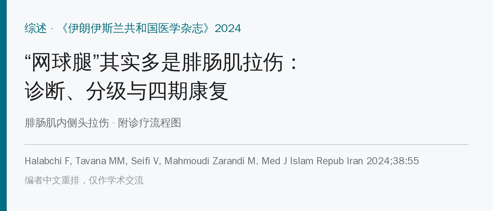
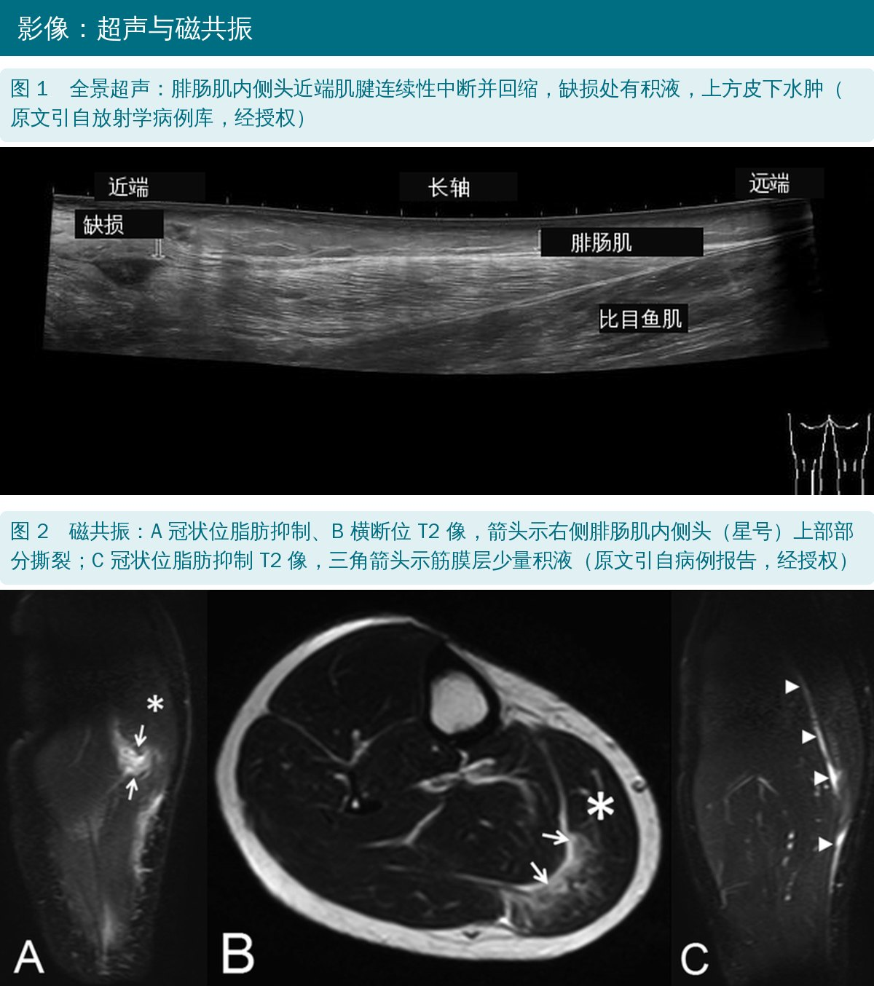
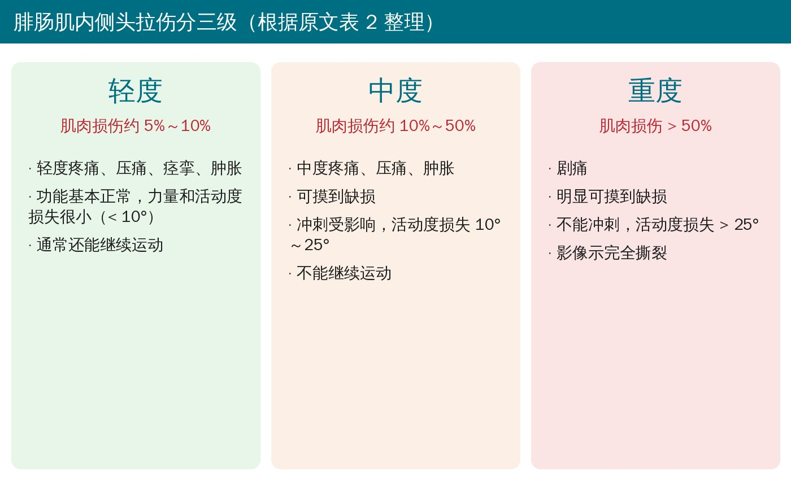
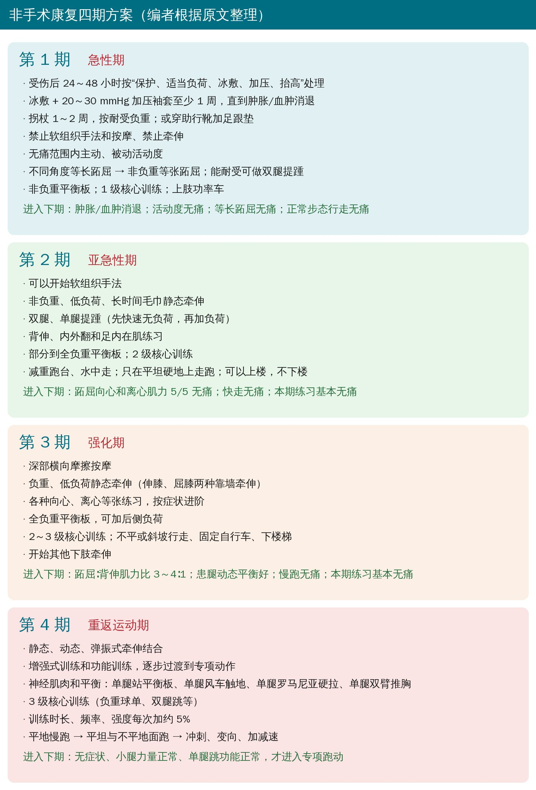
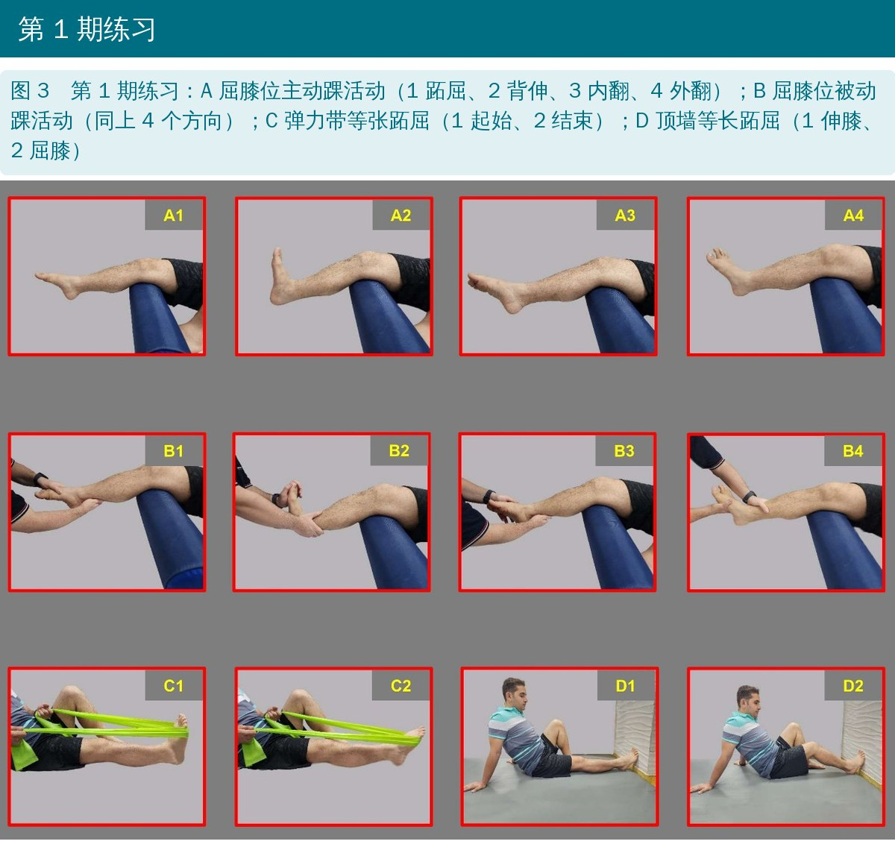
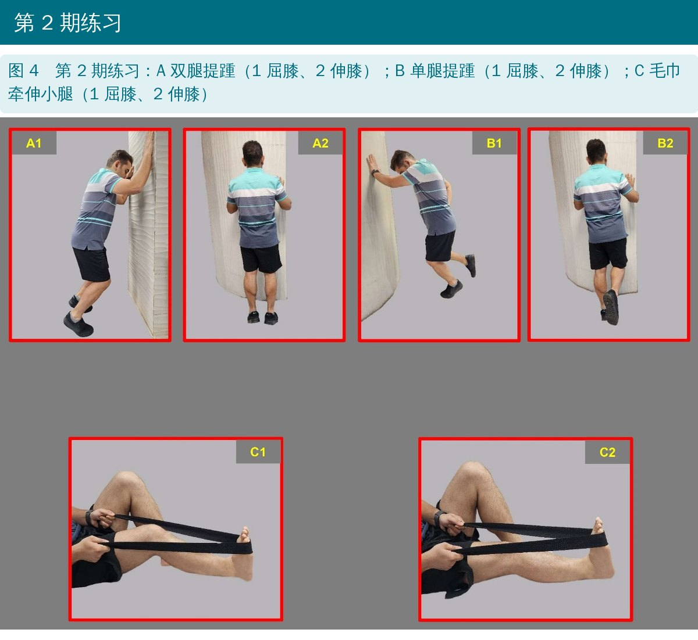
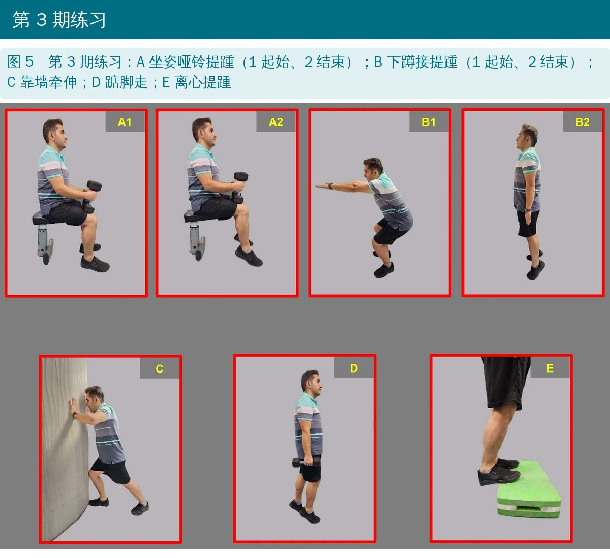
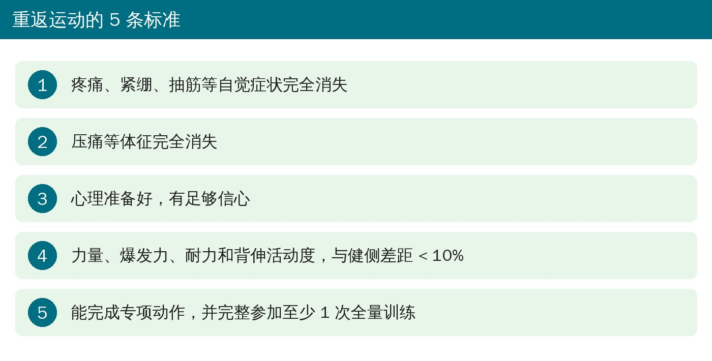
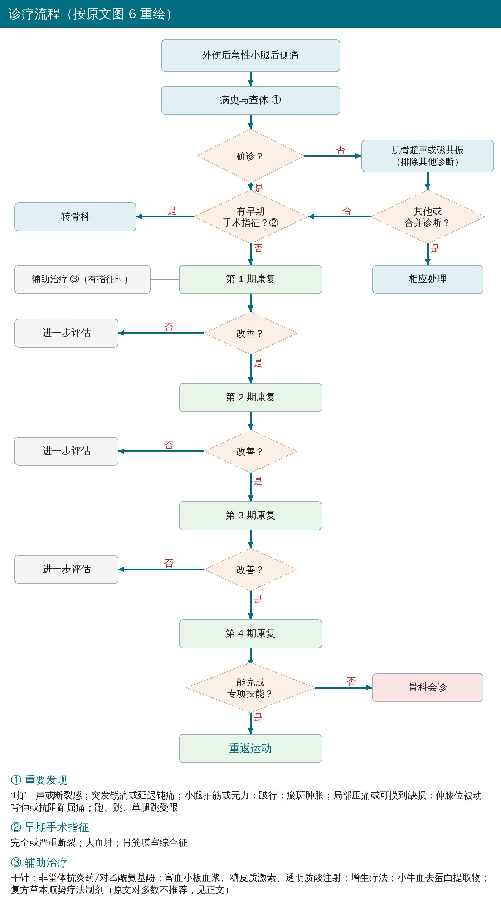

🔖原文信息（编者中文重排）
📚 文献信息
▪ Halabchi F, Tavana MM, Seifi V, Mahmoudi Zarandi M. Medial gastrocnemius strain: clinical aspects and algorithmic approach. Med J Islam Repub Iran. 2024;38:55.
▪ 作者来自伊朗德黑兰医科大学运动医学科
▪ 叙述性综述 + 作者提出的四期康复方案和诊疗流程
1883 年有人把运动中突然出现的小腿中段疼痛叫“网球腿”，当时以为是跖肌断了。后来影像研究发现，最常见的其实是腓肠肌内侧头拉伤。名字也有点误导：小腿拉伤的运动员里只有约 16% 打网球；澳式橄榄球、足球、美式橄榄球、篮球都很常见。
• 为什么偏偏是它：腓肠肌跨膝、踝两个关节，Ⅱ型（快肌）纤维约占 50%（比目鱼肌约 30%），快肌更容易被离心力拉伤；内侧头比外侧头更粗、更活跃
• 典型机制：伸膝 + 踝背伸时肌肉被拉到最长；最常见的是跑跳蹬地时，从离心拉长突然转为等长收缩
• 危险因素：证据最强的是年龄大和既往小腿拉伤；体重指数高、其他下肢旧伤、腰 5 神经根病、热身不足也有关联，但证据有限
• 病史：蹬地时小腿“啪”一声或像被踢了一下；疼痛可以是突发锐痛，也可以在 24 小时内逐渐出现的钝痛，位于小腿后内侧；约 20% 的人事先有抽筋、钝痛等前兆
• 查体：跛行、瘀斑、肿胀、局部压痛；完全断裂回缩时可摸到凹陷
• 诱发试验：伸膝位被动背伸或抗阻跖屈痛，提示腓肠肌；症状轻的人要靠跑、跳、单腿跳才能诱发
• 超声：便宜、可动态看，用于定位、分级、追踪愈合和引导抽血肿；俯卧，枕头垫在踝上方，脚悬在床外。有病例报告建议仰卧屈膝 90°、探头朝上扫，让积液靠重力浮到浅层
• 磁共振：查体和超声不符、怀疑完全断裂或肌腱撕脱、精英运动员时考虑；T2 和 STIR 上水肿呈“羽毛状”高信号，内侧头和比目鱼肌之间常见“V”形血肿

🔖原文图 1、2
鉴别诊断最常见的是比目鱼肌拉伤（疼痛偏后外侧，屈膝位诱发）、跟腱损伤，还要警惕深静脉血栓——它既可以单独发生，也可以是腓肠肌拉伤的并发症。详见文末附录表 1。

🔖分级
绝大多数腓肠肌拉伤不用手术，一般 3～6 周。作者综合文献提出四期方案，以“过关标准”决定进阶，而不是看天数，具体节奏按伤情调整。

🔖四期总览
• 受伤后 24～48 小时按“保护、适当负荷、冰敷、加压、抬高”处理
• 冰敷和 20～30 mmHg 加压袖套至少 1 周，直到查体或超声确认肿胀、血肿消退
• 拐杖用 1～2 周，按耐受负重；也可以穿助行靴、患侧垫足跟垫减少小腿牵拉，足跟垫最多可用 12 周（也有专家主张双侧各垫 6 毫米、用更短时间）
• 这一期禁止按摩和软组织手法（可能加重出血），也禁止牵伸
• 无痛范围内主动、被动活动度练习
• 力量：不同角度等长跖屈 → 非负重等张跖屈（弹力带）；能耐受可以做双腿提踵（屈膝、伸膝都做）
• 非负重平衡板；1 级核心训练（腹部回缩、俯卧眼镜蛇、斜向卷腹）；上肢功率车维持心肺
• 理疗（低强度超声、低能量激光、电疗）可以用，但近年共识不建议在伤后 72 小时内用（会升高组织温度）
进入第 2 期：初期肿胀血肿消退；安全范围内主动、被动活动无痛；等长跖屈无痛；正常步态走路无痛。

🔖原文图 3
• 可以开始软组织手法
• 活动度：非负重、低负荷、长时间的毛巾静态牵伸
• 力量：双腿 → 单腿提踵，先快速无负荷，再逐步加负荷；同时练背伸、内外翻和足内在肌
• 部分负重到全负重平衡板；2 级核心训练（瑞士球直腿抬高、俯卧伸髋、双腿桥等）
• 心肺：减重跑台、水中走、爬楼梯机；只在平坦硬地上走跑，可以上楼、暂时不下楼
进入第 3 期：跖屈向心和离心肌力 5/5 且无痛；快走无痛；本期练习基本无痛。

🔖原文图 4
• 深部横向摩擦按摩
• 活动度：负重、低负荷静态牵伸，伸膝和屈膝两种靠墙牵伸
• 力量：各种向心、离心等张练习（坐姿哑铃提踵、下蹲接提踵、踮脚走、离心提踵），按症状和耐受进阶
• 全负重平衡板，可加后侧负荷；2～3 级核心训练（瑞士球靠墙滑、单腿桥等）
• 心肺：加入不平或斜坡行走、固定自行车、下楼梯；开始其他下肢牵伸
进入第 4 期：跖屈与背伸肌力比 3～4∶1；患腿动态平衡好；慢跑或轻度跑动无痛；本期练习基本无痛。

🔖原文图 5
• 静态、动态、弹振式牵伸结合
• 增强式训练和功能训练，逐步过渡到专项动作
• 神经肌肉与平衡：单腿站平衡板、单腿风车触地、单腿罗马尼亚硬拉、单腿双臂推胸等
• 3 级核心训练：负重球单腿、双腿跳，下蹲位向前跳
• 训练时长、频率、强度每次加约 5%
• 跑步：上楼（第 2 期）、下楼（第 3 期）是走和跑之间的过渡；本期从平地慢跑 → 平坦和不平地面跑 → 冲刺、变向、加减速
• 进入专项跑动前：无症状、小腿力量正常、单腿跳功能正常

🔖重返运动标准
• 早期手术：完全或严重断裂、大血肿、骨筋膜室综合征
• 后期手术：保守治疗后跖屈力量严重下降、无法回到原来水平；疼痛和挛缩持续 4～6 个月以上；纤维化、异位骨化等并发症
• 术后长腿石膏屈膝 60°、踝跖屈约 30° 固定 3 周，再短腿石膏 3 周；拄拐 4～6 周后开始负重，康复思路与非手术相同
| 方法 | 作者态度 |
|---|---|
| 肌内效贴 | 临床证据不足、不常规推荐；无明显不良反应，运动员想用可以用 |
| 干针 | 没有专门研究，理论上可能有帮助（作者推测有潜在触发点） |
| 非甾体抗炎药 | 伤后 48 小时内不推荐，可能延缓愈合、掩盖疼痛增加复发；首选冰敷 + 对乙酰氨基酚 |
| 富血小板血浆 | 急性肌肉伤研究结果不一，对加快回场最有希望；一项回顾性研究显示可能缓解疼痛、加快回场 |
| 糖皮质激素注射 | 不推荐：多数研究显示有害 |
| 透明质酸、增生疗法、小牛血去蛋白提取物、复方草本顺势疗法制剂 | 证据不足，不推荐 |

🔖按原文图 6 重绘
• 四期方案是专家意见：作者也承认腓肠肌拉伤康复的研究“又少又散”，方案是综合多篇文献和观点得来的，没有验证
• 过关标准里的“跖屈∶背伸肌力比 3～4∶1”“每次加 5%”等数字，原文没给出处
• 这是叙述性综述，没有系统检索和质量评价
原文里对不上的地方：
• 表 2 分级的百分比自相矛盾：轻度写“肌肉损伤 5%～10%”，影像一栏却写“<5%”；中度写“10%～50%”，可摸到缺损写“>10%～25%”，超声又写“>5%”
• 第 1 期先说理疗可以用，紧接着又说共识不建议伤后 72 小时内用，没讲清楚到底什么时候能用
• 双腿提踵在第 1 期（能耐受时）和第 2 期都出现；第 3 期写“2～3 级核心训练，对小腿施加轻到中度压力”，和第 2 期的 2 级描述一样
• 干针：先说“没有任何研究评估过”，结尾却说“因此可用于预防、治疗和康复”，结论超出了证据
• 非手术康复说一般 3～6 周，但足跟垫最多用 12 周，两者时间框架不一致
• 拼写：“implanted”（应为 implemented）、“illicit”（应为 elicit）、“prform”
• 小腿后内侧突然疼、伸膝位背伸或抗阻跖屈痛，先想腓肠肌内侧头；同时排除比目鱼肌拉伤、跟腱断裂和深静脉血栓
• 急性期：加压 + 冰敷 + 可以垫足跟垫；不按摩、不牵伸；等长跖屈尽早开始
• 牵伸顺序：非负重毛巾牵伸（第 2 期） → 负重靠墙牵伸（第 3 期） → 动态、弹振式（第 4 期）
• 力量顺序：等长 → 非负重等张 → 双腿、单腿提踵 → 加负荷、离心 → 增强式
• 走跑过渡：上楼 → 下楼 → 平地慢跑 → 不平地面 → 冲刺变向
• 回场前看 5 条：无症状、无体征、心理准备好、两侧差距 < 10%、完成至少 1 次全量训练
• 急性期少用非甾体抗炎药，不打激素
原文表 1 腓肠肌内侧头拉伤的鉴别诊断
| 鉴别诊断 | 鉴别要点 | 其他要点 |
|---|---|---|
| 比目鱼肌拉伤 | 疼痛多在小腿后外侧；屈膝位被动背伸或抗阻跖屈时痛 | 怀疑腓肠肌拉伤时都应评估比目鱼肌；肌肉位置深，磁共振为首选 |
| 跟腱损伤 | Simmonds 三联试验（触诊、Matles 试验、Thompson 挤压试验），三项中两项阳性时敏感度 100% | 怀疑腓肠肌拉伤时必须评估跟腱 |
| 牵涉痛（来自膝、上胫腓关节、腰部） | — | 病史和表现可疑时做相应检查和影像 |
| 神经卡压 | 胫神经：小腿后内侧、跟骨后下方和足外缘感觉异常；腓肠神经：小腿远端 1/3 后外侧及足外侧、足跟、踝外侧感觉异常 | 可继发于血肿；胫神经卡压很少出现运动症状 |
| 动脉问题 | 间歇性跛行，走、跑加重、休息缓解；可有外周脉搏异常和动脉杂音 | 多普勒超声、踝臂指数、血管造影确诊 |
| 深静脉血栓 | 发绀、可触及条索、浅静脉扩张、Homans 征阳性 | 可单独发生，也可作为并发症；需用双功超声等更准确的影像确诊 |
原文表 2 腓肠肌内侧头拉伤分级
| 分级 | 肌肉损伤程度 | 临床表现 | 影像 |
|---|---|---|---|
| 轻度 | 5%～10% | 轻度疼痛；轻度压痛、痉挛、肿胀；功能基本正常（力量和活动度损失很小，< 10°）；通常能继续运动 | 磁共振：肌肉结构正常，可有或无水肿出血，羽毛状改变，肌纤维受累 < 5%；超声：可见 < 5% 的肌肉中断 |
| 中度 | 10%～50% | 中度疼痛；中度压痛和肿胀；可摸到缺损（> 10%～25%）；冲刺受影响（力量和活动度中度损失，10°～25°）；不能继续运动 | 磁共振：< 50% 撕裂，可有或无回缩，可见水肿出血；超声：> 5% 肌肉中断，伴水肿出血，可能有筋膜损伤 |
| 重度 | > 50% | 剧痛；明显可摸到缺损；不能冲刺（力量和活动度严重损失，> 25°） | 磁共振：完全撕裂，可有或无回缩，广泛水肿出血；超声：肌肉和筋膜完全中断 |
欢迎关注悦美力公众号，获取更多物理治疗的专业知识！
📄参考文献：
Halabchi F, Tavana MM, Seifi V, Mahmoudi Zarandi M. Medial gastrocnemius strain: clinical aspects and algorithmic approach. Med J Islam Repub Iran. 2024;38:55. doi:10.47176/mjiri.38.55
原文以知识共享署名—非商业性使用—相同方式共享协议（CC BY-NC-SA）发表，本文为非商业学术交流用的中文解读，并以相同协议共享。原文图 1 引自放射学病例库、图 2 引自病例报告（均经原作者授权转载），超声英文标注已改为中文；图 3～5 加中文标注；诊疗流程按原文图 6 重绘为中文；分级卡、四期总览与重返运动卡为编者中文绘制，表格为编者翻译。